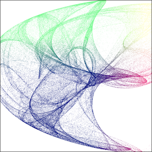
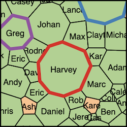
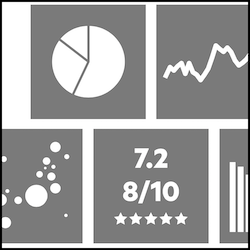

Numerical computations/simulations
Stimulating my numerical curiosity by playing with mathematical models.



Visualization
Data are better when visualized!



Software
Some custom programs, apps and scripts developped to increase productivity in the lab.

Statistics / Data Science
Everything related with Statistics.
